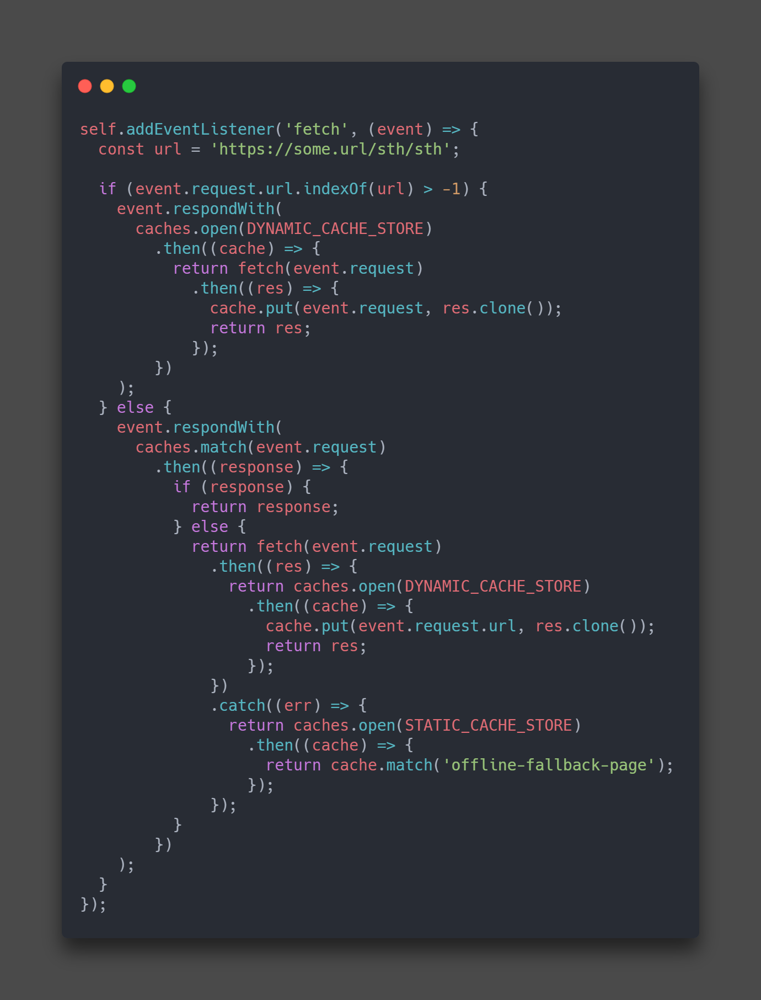
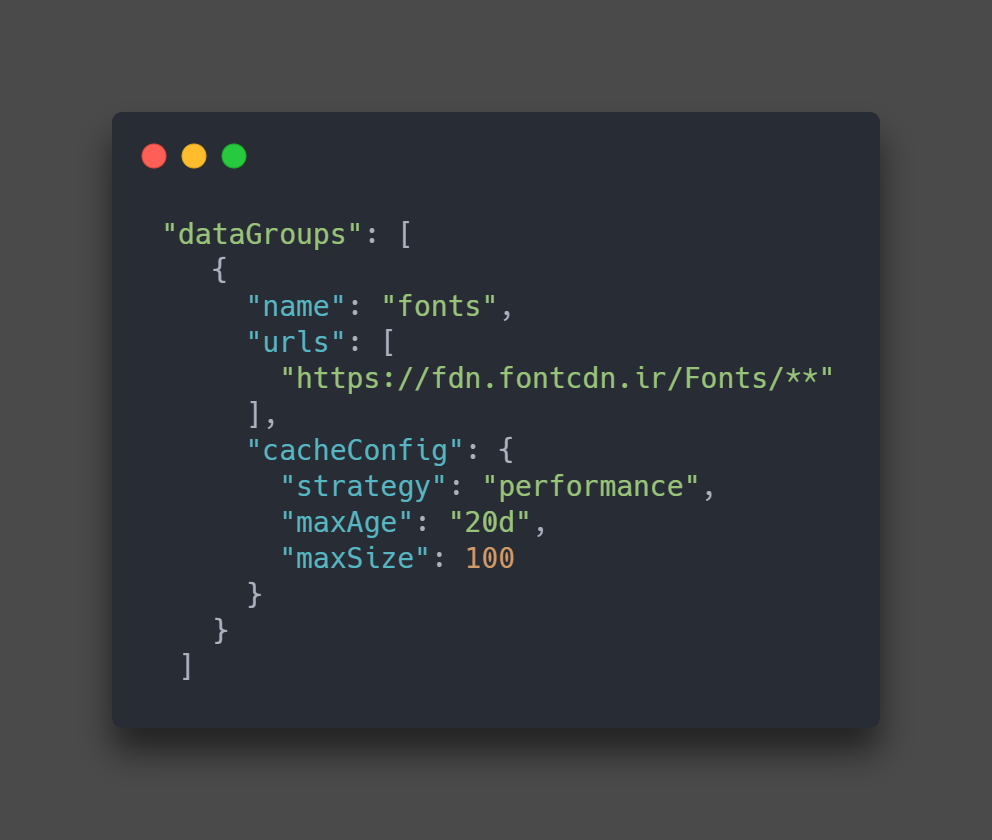

در حالت عادی که از قابلیت های انگولار استفاده نمی کنیم برای کش کردن فایل ها باید کدی شبیه به کد زیر را در سرویس ورکر بنویسیم :
در عکس بالا میتوان دید که میتوانیم از قبل تعدادی از فایل ها را به صورت استاتیک کش کنیم و تعدادی را نیز به صورت داینامیک .و نکته دیگری که جالب توجه است این است که میتوان برحسب URL که به آن درخواست یک فایل را میدهیم برای کش کردن فایل ها تصمیم گیری کنیم .
اما در انگولار میتوانیم در فایل ngsw-config.json این کار را انجام دهیم .
برای این کار باید به آبجکت موجود یک عبارت اضافه کنیم و نام ، URL و تنظیمات را مانند عکس زیر بنویسیم .
